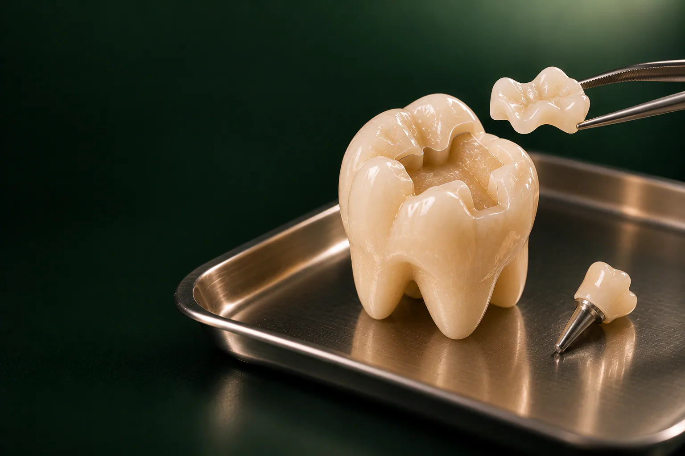

Консультация и диагностика
Ортопед осматривает зуб (консультация бесплатная), назначает прицельный снимок, при необходимости, ОПТГ или КТ.

Вкладка, это протез части зуба: её изготавливают в лаборатории по оттиску или цифровому скану и фиксируют на цемент.
Имеются противопоказания. Необходима консультация специалиста.
Культевая вкладка восстанавливает основание зуба после лечения каналов, чтобы на нём надёжно держалась коронка, а керамическая вкладка E.max заменяет большую пломбу на жевательном зубе. В стоматологии «Умная Медицина» в пос. Удельная (Раменский округ) вкладка под коронку стоит от 5 500 ₽, керамическая: от 34 100 ₽. Вкладки делают стоматологи-ортопеды Солодухин Е. В. и Алиханова С. А.; первый шаг: бесплатная консультация ортопеда, после которой у вас на руках план лечения и стоимость.
Цена зависит от вида вкладки и материала. Культевую ставят под коронку, поэтому считать нужно две позиции: саму вкладку (от 5 500 ₽) и коронку из выбранного материала. Керамическая вкладка E.max восстанавливает зуб вместо пломбы и стоит от 34 100 ₽: коронка в этом случае обычно уже не нужна. Точную сумму ортопед называет после осмотра и снимка, когда понятно, сколько тканей зуба сохранилось и нужно ли лечить каналы.
Цены «от»: минимальные. Окончательную стоимость ортопед называет после диагностики и записывает в план лечения. Цены актуальны на 18.10.2026.
уточняем у клиники
Когда зуб восстанавливают под коронку, итоговая сумма складывается из нескольких этапов:
Если каналы уже вылечены и на снимке всё в порядке, часть строк не понадобится. Как выбрать материал коронки, подробно рассказываем на странице коронки на зубы.
Подробнее: на странице цены, рассрочка и налоговый вычет.
Пломбу врач формирует прямо во рту, слой за слоем. Вкладку делают вне рта, по точной модели зуба: техник выверяет форму, контакт с соседними зубами и прилегание к краям полости, а готовую деталь фиксируют на цемент.
Восстановление зуба вкладкой: способ вернуть зубу форму и прочность, когда пломбы уже мало. Вкладки бывают двух видов:
Пломба хороша при небольших и средних дефектах: её ставят за один визит, а цена ниже, лечение кариеса от 4 000 ₽, художественная реставрация от 8 550 ₽. Вкладку стоит рассмотреть, если:
Когда после лечения каналов от коронковой части зуба остаётся мало, коронке просто не на чем держаться. Тогда в каналы корня устанавливают культевую вкладку: её штифтовая часть уходит в канал, а верхняя часть заменяет утраченные ткани и повторяет форму обточенного под коронку зуба. Её изготавливают индивидуально, по форме каналов конкретного зуба.
Стандартный штифт, готовая заводская деталь: его вводят в канал, а культю наращивают пломбировочным материалом. Такой вариант уместен, если стенки зуба сохранились достаточно хорошо. Если же над десной почти ничего не осталось, надёжнее индивидуальная штифтовая культевая конструкция: она повторяет форму канала и представляет собой единое целое, поэтому равномернее распределяет жевательную нагрузку. Что подходит вашему зубу, ортопед решает по снимку.
На передних зубах обычно один канал, поэтому культевую вкладку под коронку ставят и на них: если зуб без нерва сильно разрушен. Здесь особенно важна эстетика, и под коронку из циркония или E.max чаще выбирают безметалловый вариант. Керамические вкладки на передние зубы ставят редко: небольшие дефекты в зоне улыбки восстанавливают реставрацией. Чтобы заранее увидеть будущую форму передних зубов, ортопеды клиники используют восковое моделирование Wax-Up и примерку Mock-Up.
Вкладки из E.max (дисиликат лития) подходят жевательным зубам с большим дефектом: материал близок к эмали по цвету и светопропусканию. Их изготавливают, в том числе фрезерованием по цифровой модели после 3D-сканирования.
В зависимости от того, сколько тканей утрачено, различают:
Накладка на зуб вместо коронки, хороший вариант, когда часть стенок сохранилась: под накладку снимают меньше тканей, чем при обточке под коронку. Если зуб разрушен сильнее, ортопед предложит коронку. Композитные вкладки дешевле керамических, но уступают им в износостойкости уточняем у клиники.
Если вы искали накладки для исправления прикуса, это другая услуга: прикус исправляет ортодонт с помощью брекетов или элайнеров. Подробнее: в разделе ортодонтия.
Вкладку изготавливают в лаборатории, поэтому между подготовкой зуба и фиксацией проходит время. Порядок такой:
Ортопед осматривает зуб (консультация бесплатная), назначает прицельный снимок, при необходимости, ОПТГ или КТ.
Перед установкой культевой вкладки каналы должны быть вылечены и плотно запломбированы. Этим занимается эндодонтист: подробнее на странице лечение каналов зуба, в том числе под микроскопом.
Под местной анестезией врач удаляет старую пломбу и поражённые ткани. Для культевой вкладки канал частично освобождают от пломбировочного материала на нужную глубину, для керамической: придают полости форму, в которую вкладка встанет без зазоров.
Снимают точный оттиск винил-полисилоксановой массой или сканируют челюсти интраоральным сканером (2 200 ₽).
Пока вкладку изготавливают, зуб закрывают светоотверждаемой временной пломбой, а при работе под коронку: временной коронкой.
Зубной техник моделирует и изготавливает вкладку из выбранного материала уточняем у клиники.
Врач проверяет, как вкладка прилегает к краям и контактирует с соседними зубами, затем фиксирует её на стоматологический цемент.
На культевую вкладку ставят коронку: временную, а затем постоянную после изготовления.
Сроки и цену каждого этапа врач распишет в плане лечения.
Записаться на консультациюЕсли каналы уже вылечены, всё проходит быстрее; если зуб нужно лечить или перелечивать: дольше. Число визитов и время изготовления ортопед называет при составлении плана уточняем у клиники.
Сколько служит вкладка, заранее сказать в годах нельзя: срок зависит от материала, состояния корня, качества лечения каналов, гигиены, прикуса и бруксизма. Чтобы вкладка и коронка прослужили долго:
Повод записаться к врачу: боль при накусывании, отёк десны, ощущение щели у края, подвижность коронки. Если выпала коронка с культевой вкладкой, не вклеивайте её сами: сохраните конструкцию и приходите к ортопеду, он проверит корень и решит, можно ли зафиксировать её повторно.
Срок гарантии и её условия, контрольные осмотры, профгигиена, прописываются в договоре уточняем у клиники. Ортопед объясняет их до начала лечения.
Вкладки планирует, изготавливает с лабораторией и фиксирует стоматолог-ортопед. Если перед протезированием нужно лечить каналы, подключается эндодонтист.

Главный врач, ортопед
Протезирование и восстановление зубов, протезы на имплантах
Записаться к врачу
Ортопед
Восстановление зубов и протезирование, эстетичные коронки
Записаться к врачу
Терапевт, эндодонтист
Лечение кариеса и каналов, сохранение зубов
Записаться к врачуЗдесь публикуем отзывы только тех пациентов, которым в клинике ставили вкладки, и только с их письменного согласия.
отзыв пациента
Это изготовленная в лаборатории деталь, которая восстанавливает утраченную часть зуба. Культевая служит основой под коронку для зуба без нерва, керамическая заменяет большую пломбу на жевательном зубе.
Зависит от того, сколько тканей осталось. Если стенки зуба крепкие, может подойти стандартный штифт с наращиванием культи. Если над десной почти ничего нет, надёжнее индивидуальная вкладка: она повторяет форму канала и равномернее распределяет нагрузку. Решает ортопед по снимку.
Культевая похожа на обточенный зуб со стержнем-штифтом снизу: штифт входит в канал, верхняя часть служит опорой для коронки. Керамическая выглядит как фрагмент жевательной поверхности под цвет эмали и точно повторяет форму полости.
Сначала лечат каналы, затем частично освобождают канал на нужную глубину и снимают оттиск или делают 3D-скан. Пока техник изготавливает вкладку, зуб закрыт временной пломбой. Готовую вкладку фиксируют на цемент, а затем ставят коронку.
Да, но только у врача и специальными инструментами. Это требуется, например, если нужно повторно лечить каналы. Извлечение вкладки связано с риском для корня, поэтому решение принимают после снимка.
Небольшая чувствительность в первые дни после фиксации бывает. Если боль усиливается, появляется при накусывании или держится дольше нескольких дней, а десна отекает, запишитесь к врачу: нужно сделать снимок и проверить корень.
Вкладка, от 5 500 ₽, коронка из металлокерамики, от 26 400 ₽, из циркония или E.max, от 34 100 ₽. Если каналы не вылечены, к сумме добавляется их лечение. Консультация ортопеда бесплатная.
Стоматолог-ортопед: в клинике это Солодухин Евгений Викторович и Алиханова Светлана Андреевна. Лечение каналов перед установкой вкладки проводит эндодонтист Читайкин Артём Сергеевич.
Запишитесь на консультацию: план лечения с ценой по этапам
Имеются противопоказания. Необходима консультация специалиста.
Адрес клиники: Московская обл., Раменский округ, пос. Удельная, ул. Громова, 10/2. Клиника рядом с Жуковским; по соседству Малаховка, Быково, Ильинский, Родники, Островцы, Красково и Октябрьский. Пациенты приезжают и из Люберец, Раменского и Балашихи. Если зуб уже лечили в другой клинике, возьмите с собой старые снимки: по ним ортопеду проще оценить каналы перед изготовлением вкладки.
На машине: из Жуковского через Быково, без выезда в Москву. Парковка: уточняем у клиники.
На МЦД-3: до станции Удельная, от неё пешком до клиники. Из Жуковского: от станции Отдых три остановки без пересадок (Ильинская, Быково, Удельная).
Подробнее о клинике: на странице стоматология в Удельной.
Имеются противопоказания. Необходима консультация специалиста.
пгт Удельная, Раменский округ, рядом с Жуковским.
Ежедневно с 9:00 до 21:00
+7 495 150-36-15К нам ездят из Жуковского, Раменского, Быкова, Ильинского, Красково, Малаховки, Островцов, Люберец и Балашихи.
Перезвоним за 5 минут, подберём врача и удобное время.
Оставьте номер, администратор перезвонит и ответит на вопросы.
Подойдёт КТ, панорама, прицельный снимок или фото плана лечения из другой клиники. Врач посмотрит и ответит в течение рабочего дня. Это бесплатно.
Хирург, ортопед и терапевт осмотрят вас вместе, сделаем КТ. Консультация бесплатная, стоимость лечения врач назовёт после осмотра.
Консультацию ведут вместе
 ХирургМихаилОртопедЕвгенийТерапевтАртём
ХирургМихаилОртопедЕвгенийТерапевтАртёмПервый визит бесплатно
Хирург, ортопед и терапевт посмотрят ваш случай вместе и предложат два-три варианта с ценой. Оставьте номер, администратор перезвонит и подберёт время.
Скидка 10% на лечение, если оплатить его в день консультации
Перезвоним за 5 минут, ежедневно с 9:00 до 21:00. Отправляя заявку, вы соглашаетесь на обработку персональных данных.